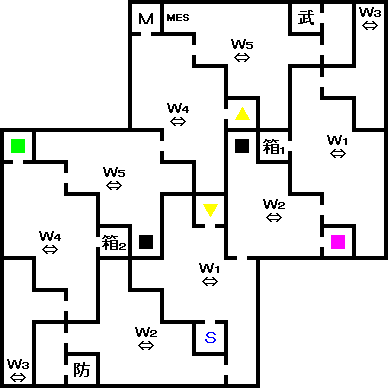
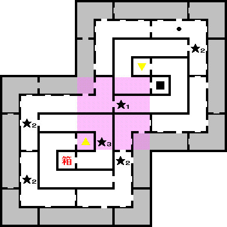
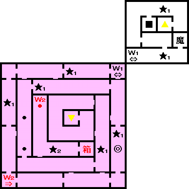
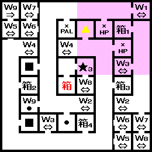
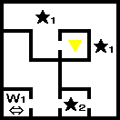
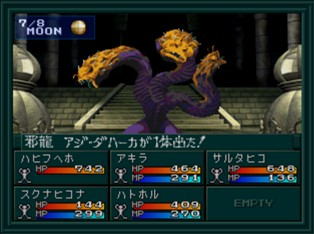
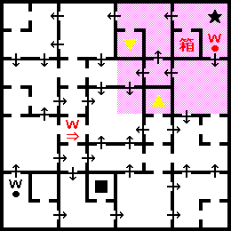

- 시설
- 공략
- 25F
- 26F
- 27F
- 28F
- BOSS:사룡 아지다하카
- 29F
시설
- 25F : 회복, 사교의 관, MAG, 무기, 방어
공략
제4노모스에는
속성 변화 보상이 있다. 자세한 내용은 링크를 참고
중간에 COMP가 사용 불가되는 지역이 있으니 주의하자.
특별한 이벤트는 없고 28F에서
BOSS:사룡 아지다하카를 쓰러뜨리면 클리어할 수 있다. 29F 위층으로 올라가면
하늘의 노모스에 진입한다.
25F

- MES : 히노카구츠치 힌트
- S : 세이브
- M : MAG 교환
26F

- ★1 : 하자마
- ★2 : 아지다하카의 포효
- ★3 : 요수 베히모스
- 箱 : 속성 변화 보상
- ■ 지역 : COMP 사용 불가
27F

- ★1 : 아지다하카의 포효
- ★2 : 사귀 헤카톤케일
- W2 : 북쪽에서 진입했을 경우만 이동
- 箱 : 속성 변화 보상
- ■ 지역 : COMP 사용 불가
28F


- ★1 : 아지다하카의 포효
- ★2 : 아지다하카
- ★3 : 사룡 티아마트
- 箱 : 속성 변화 보상
- ■ 지역 : COMP 사용 불가
BOSS:사룡 아지다하카

| 이름 |
Lv65 邪龍 アジ・ダハ−カ |
| HP |
15000 |
| 마법/특기 |
デカジャ, ファイアブレス, アイスブレス, どくガスブレス, あばれまくり, ニ−ドルテイル, デクンダ |
화염, 빙결, 독 속성의 브레스를 사용한다. 총 공격이 유효하다. 타루카쟈와 회복 위주로 공격해나가면 쉽게 이길 수 있다.
29F

- ★ : 사신 크툴루
- W : 남쪽에서 진입했을 경우만 북동으로 이동
- 箱 : 속성 변화 보상
- ■ 지역 : COMP 사용 불가